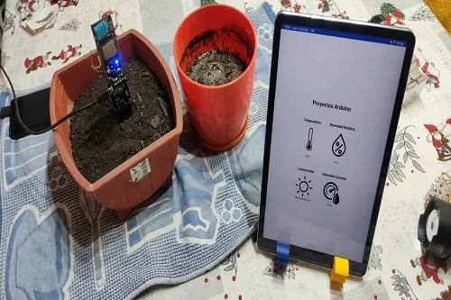
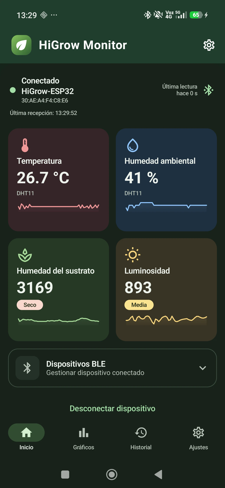
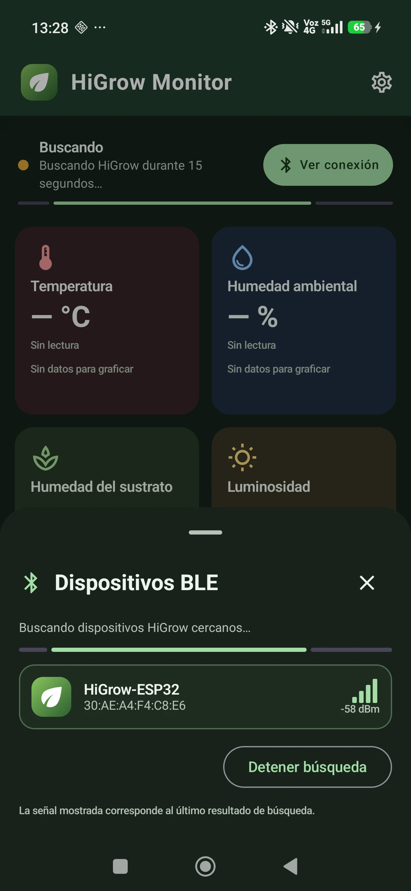
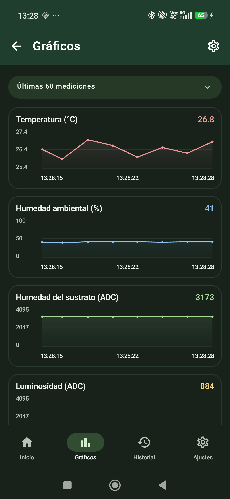
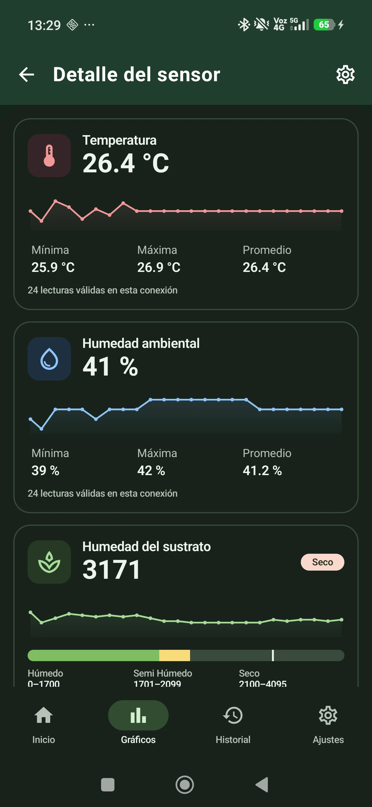
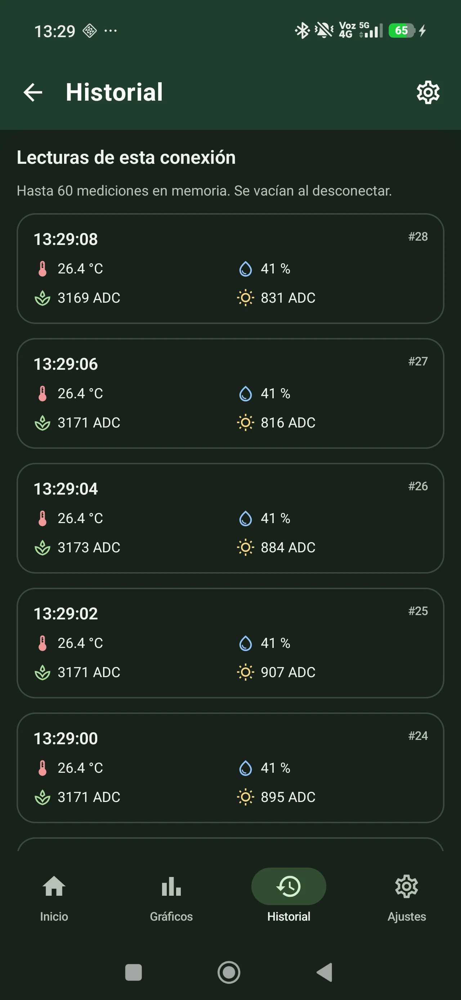
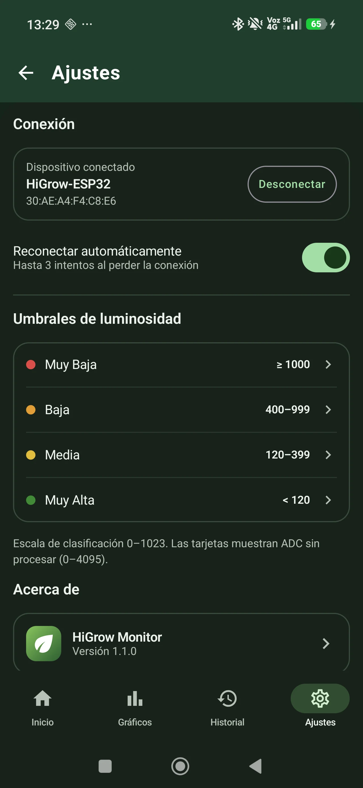

- ESP32
- BLE
- DHT11
- Android
HiGrow ESP32 con BLE y app Android
Monitor local con HiGrow ESP32 y una app Android conectada por Bluetooth Low Energy. Reúne temperatura, humedad ambiental, sustrato y luminosidad en tarjetas, gráficos y un historial de la conexión actual.

Tecnologías
- ESP32
- BLE
- DHT11
- Android
Objetivo del proyecto
Consultar las mediciones del HiGrow desde un teléfono Android mediante BLE, con visualización y procesamiento locales durante el funcionamiento del monitor.
Arquitectura o funcionamiento
El HiGrow original integra un ESP32, un DHT11 en GPIO22 y la lectura de sustrato en GPIO32. El montaje añade un LDR externo en GPIO35. El firmware envía un paquete BLE de 12 bytes con las mediciones y su estado de validez. La app Android se conecta al servicio GATT, interpreta los paquetes y actualiza sus tarjetas, gráficos y estadísticas. El funcionamiento del monitor no depende de Wi-Fi, Internet ni servicios en la nube.
Flujo de funcionamiento
Desde Conectar BLE se busca y selecciona HiGrow-ESP32. El firmware programa una medición aproximadamente cada dos segundos y filtra la lectura de sustrato cada 100 ms. La app presenta la temperatura en °C y la humedad ambiental en % HR; sustrato y luminosidad se muestran como valores ADC. Inicio reúne las cuatro variables, Gráficos permite revisar las últimas 15, 30 o 60 muestras, y el detalle de cada sensor muestra mínima, máxima y promedio. Ajustes conserva preferencias locales, umbrales de luz y la opción de reconexión automática.
Desarrollo e implementación
El firmware Arduino utiliza el BLE incluido en el core ESP32 y la biblioteca DHT de Adafruit. La configuración del HiGrow original activa la alimentación de sus sensores mediante GPIO16 en LOW antes de leer el DHT11. La app nativa está desarrollada en Kotlin con Jetpack Compose y Material 3. El protocolo define explícitamente la versión, las unidades y la validez de las lecturas; el repositorio incluye pruebas del codificador, el parser y las estadísticas, además de instrucciones de compilación y diagnóstico.
Desafíos técnicos
La app rechaza paquetes malformados y muestra guiones para temperatura y humedad cuando el DHT11 informa un error, conservando las lecturas ADC del mismo paquete. El historial guarda hasta 60 paquetes en memoria y se vacía al desconectar; no es un registro permanente. Los valores de sustrato y luminosidad no están convertidos a porcentaje de humedad ni a lux. La configuración de pines corresponde al HiGrow original y debe revisarse antes de usar otra placa. La app avisa si pasan seis segundos sin un paquete válido y contempla reintentos limitados de conexión.
Resultados
La versión 1.1.0 reúne recepción BLE, cuatro paneles de medición, gráficos, historial y ajustes. El repositorio documenta una prueba física con detección del HiGrow, conexión y recepción continua de datos en un teléfono Xiaomi. Las seis capturas de esta ficha proceden de esa ejecución real del 22 de octubre de 2026. El vídeo conserva la demostración original del proyecto; las capturas muestran la app actual. Las pruebas documentadas no acreditan calibración, autonomía ni alcance del enlace.
Aplicaciones posibles
Seguimiento cercano de variables ambientales y del sustrato de una planta, y actividades para explorar adquisición de sensores, protocolos BLE y visualización de datos en Android.
Hardware utilizado
- Placa HiGrow original con ESP32
- DHT11 integrado en GPIO22 para temperatura y humedad ambiental
- Lectura de sustrato integrada en GPIO32
- LDR externo con salida analógica en GPIO35 y GND común
- Teléfono Android 8.0 o posterior con Bluetooth Low Energy
Software y tecnologías
- Firmware Arduino para ESP32 con BLE del core Espressif
- Bibliotecas Adafruit DHT y Adafruit Unified Sensor
- App Android nativa en Kotlin, Jetpack Compose y Material 3
- Servicio GATT con lectura inicial y notificaciones de paquetes de 12 bytes
- Historial de sesión en memoria y preferencias locales de la app
Imágenes del proyecto





